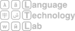
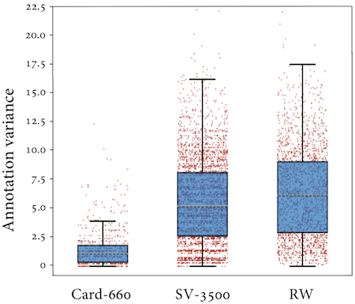

<!DOCTYPE html PUBLIC "-//W3C//DTD XHTML 1.0 Transitional//EN" "http://www.w3.org/TR/xhtml1/DTD/xhtml1-transitional.dtd">
<!-- saved from url=(0045)http://people.ds.cam.ac.uk/mp792/card-660.html -->
<html><head>
<!-- Global site tag (gtag.js) - Google Analytics -->
<script async src="https://www.googletagmanager.com/gtag/js?id=UA-123759115-1"></script>
<script>
  window.dataLayer = window.dataLayer || [];
  function gtag(){dataLayer.push(arguments);}
  gtag('js', new Date());

  gtag('config', 'UA-123759115-1');
</script>
<meta http-equiv="Content-Type" content="text/html; charset=windows-1252">
<link rel="stylesheet" href="./files/general.css" type="text/css" media="all">
<link href="https://fonts.googleapis.com/css?family=Roboto:700" rel="stylesheet">
<link href="https://fonts.googleapis.com/css?family=PT+Serif" rel="stylesheet">
<link href="https://fonts.googleapis.com/css?family=PT+Sans" rel="stylesheet">
    <link href='http://fonts.googleapis.com/css?family=Bree+Serif' rel='stylesheet' type='text/css'>
<title>Card-660: Cambridge Rare Word Dataset</title>
<style type="text/css">/*
 * contextMenu.js v 1.4.0
 * Author: Sudhanshu Yadav
 * s-yadav.github.com
 * Copyright (c) 2013 Sudhanshu Yadav.
 * Dual licensed under the MIT and GPL licenses
**/

table {
    border-collapse: collapse;
    border-collapse: collapse;
}

body{
	background:#333333 url(files/page-bg.jpg);
	margin:0px;
    margin-bottom: 10px;
    }

a{
        text-decoration: none;
    }
    
a:link{
        color:firebrick;
    }
    
a:visited{
        color:firebrick;
    }
a:hover{
        color: deeppink;
    }
    
th, td {
    text-align: left;
    padding: 8px;
}

tr:nth-child(even){background-color: #f2f2f2}

th {
    background-color: #4CAF50;
    color: white;
}
    
*
    {
        font-family: 'PT Sans', sans-serif;
        font-size: 10pt;
        line-height: 1.3;
    }
h1{

    font: 400 16px/20px 'Bree Serif', Georgia, serif;
    font-size: 20pt;
    margin-bottom: 30px;
}
 h2{

    font: 400 16px/20px 'Bree Serif', Georgia, serif;
    font-size: 16pt;
    margin-bottom: 30px;
}   
    
.iw-contextMenu {
    box-shadow: 0px 2px 3px rgba(0, 0, 0, 0.10);
    border: 1px solid #c8c7cc;
    border-radius: 11px;
    display: none;
    z-index: 1000000132;
    max-width: 300px;
}

.iw-cm-menu {
    background: #fff;
    color: #000;
    margin: 0px;
    padding: 0px;
}

.iw-curMenu {
}

.iw-cm-menu li {
    font-family: -apple-system, BlinkMacSystemFont, "Helvetica Neue", Helvetica, Arial, Ubuntu, sans-serif;
    list-style: none;
    padding: 10px;
    padding-right: 20px;
    border-bottom: 1px solid #c8c7cc;
    cursor: pointer;
    position: relative;
    font-size: 14px;
    margin: 0;
    line-height: inherit;
}

.iw-cm-menu li:first-child {
    border-top-left-radius: 11px;
    border-top-right-radius: 11px;
}

.iw-cm-menu li:last-child {
    border-bottom-left-radius: 11px;
    border-bottom-right-radius: 11px;
    border-bottom: none;
}

.iw-mOverlay {
    position: absolute;
    width: 100%;
    height: 100%;
    top: 0px;
    left: 0px;
    background: #FFF;
    opacity: .5;
}

.iw-contextMenu li.iw-mDisable {
    opacity: 0.3;
    cursor: default;
}

.iw-mSelected {
    background-color: #F6F6F6;
}

.iw-cm-arrow-right {
    width: 0;
    height: 0;
    border-top: 5px solid transparent;
    border-bottom: 5px solid transparent;
    border-left: 5px solid #000;
    position: absolute;
    right: 5px;
    top: 50%;
    margin-top: -5px;
}

.iw-mSelected > .iw-cm-arrow-right {
}

/*context menu css end */</style><style type="text/css">@-webkit-keyframes load4 {
    0%,
    100% {
        box-shadow: 0 -3em 0 0.2em, 2em -2em 0 0em, 3em 0 0 -1em, 2em 2em 0 -1em, 0 3em 0 -1em, -2em 2em 0 -1em, -3em 0 0 -1em, -2em -2em 0 0;
    }
    12.5% {
        box-shadow: 0 -3em 0 0, 2em -2em 0 0.2em, 3em 0 0 0, 2em 2em 0 -1em, 0 3em 0 -1em, -2em 2em 0 -1em, -3em 0 0 -1em, -2em -2em 0 -1em;
    }
    25% {
        box-shadow: 0 -3em 0 -0.5em, 2em -2em 0 0, 3em 0 0 0.2em, 2em 2em 0 0, 0 3em 0 -1em, -2em 2em 0 -1em, -3em 0 0 -1em, -2em -2em 0 -1em;
    }
    37.5% {
        box-shadow: 0 -3em 0 -1em, 2em -2em 0 -1em, 3em 0em 0 0, 2em 2em 0 0.2em, 0 3em 0 0em, -2em 2em 0 -1em, -3em 0em 0 -1em, -2em -2em 0 -1em;
    }
    50% {
        box-shadow: 0 -3em 0 -1em, 2em -2em 0 -1em, 3em 0 0 -1em, 2em 2em 0 0em, 0 3em 0 0.2em, -2em 2em 0 0, -3em 0em 0 -1em, -2em -2em 0 -1em;
    }
    62.5% {
        box-shadow: 0 -3em 0 -1em, 2em -2em 0 -1em, 3em 0 0 -1em, 2em 2em 0 -1em, 0 3em 0 0, -2em 2em 0 0.2em, -3em 0 0 0, -2em -2em 0 -1em;
    }
    75% {
        box-shadow: 0em -3em 0 -1em, 2em -2em 0 -1em, 3em 0em 0 -1em, 2em 2em 0 -1em, 0 3em 0 -1em, -2em 2em 0 0, -3em 0em 0 0.2em, -2em -2em 0 0;
    }
    87.5% {
        box-shadow: 0em -3em 0 0, 2em -2em 0 -1em, 3em 0 0 -1em, 2em 2em 0 -1em, 0 3em 0 -1em, -2em 2em 0 0, -3em 0em 0 0, -2em -2em 0 0.2em;
    }
}

@keyframes load4 {
    0%,
    100% {
        box-shadow: 0 -3em 0 0.2em, 2em -2em 0 0em, 3em 0 0 -1em, 2em 2em 0 -1em, 0 3em 0 -1em, -2em 2em 0 -1em, -3em 0 0 -1em, -2em -2em 0 0;
    }
    12.5% {
        box-shadow: 0 -3em 0 0, 2em -2em 0 0.2em, 3em 0 0 0, 2em 2em 0 -1em, 0 3em 0 -1em, -2em 2em 0 -1em, -3em 0 0 -1em, -2em -2em 0 -1em;
    }
    25% {
        box-shadow: 0 -3em 0 -0.5em, 2em -2em 0 0, 3em 0 0 0.2em, 2em 2em 0 0, 0 3em 0 -1em, -2em 2em 0 -1em, -3em 0 0 -1em, -2em -2em 0 -1em;
    }
    37.5% {
        box-shadow: 0 -3em 0 -1em, 2em -2em 0 -1em, 3em 0em 0 0, 2em 2em 0 0.2em, 0 3em 0 0em, -2em 2em 0 -1em, -3em 0em 0 -1em, -2em -2em 0 -1em;
    }
    50% {
        box-shadow: 0 -3em 0 -1em, 2em -2em 0 -1em, 3em 0 0 -1em, 2em 2em 0 0em, 0 3em 0 0.2em, -2em 2em 0 0, -3em 0em 0 -1em, -2em -2em 0 -1em;
    }
    62.5% {
        box-shadow: 0 -3em 0 -1em, 2em -2em 0 -1em, 3em 0 0 -1em, 2em 2em 0 -1em, 0 3em 0 0, -2em 2em 0 0.2em, -3em 0 0 0, -2em -2em 0 -1em;
    }
    75% {
        box-shadow: 0em -3em 0 -1em, 2em -2em 0 -1em, 3em 0em 0 -1em, 2em 2em 0 -1em, 0 3em 0 -1em, -2em 2em 0 0, -3em 0em 0 0.2em, -2em -2em 0 0;
    }
    87.5% {
        box-shadow: 0em -3em 0 0, 2em -2em 0 -1em, 3em 0 0 -1em, 2em 2em 0 -1em, 0 3em 0 -1em, -2em 2em 0 0, -3em 0em 0 0, -2em -2em 0 0.2em;
    }
}</style><style type="text/css">/* This is not a zero-length file! */</style></head>
<body>


<div id="wrapper">
    <header style="height: 80px; background-color:#222222">
        <div  style="width: 200px; margin-left: 20px; float: left; vertical-align: middle">
            <a href="http://ltl.mml.cam.ac.uk/" title="Go to LTL homepage">
                
            </a>
        </div>
        <div style="margin-left: 140px; margin-right: 30px; vertical-align: middle">
        
        </div>
        <br>
    </header>

    <div id="content">

        <!--
        <ul id="nav">
            <li class="first">
                
                <a href="http://www.cam.ac.uk/">University of Cambridge</a> &gt;
            </li>
            <li><a href="http://ltl.mml.cam.ac.uk/">Language Technology Lab</a> &gt; </li>
            <li><a href="http://people.ds.cam.ac.uk/mp792/">Mohammad Taher Pilehvar</a> &gt; </li>
            <li><a href="http://people.ds.cam.ac.uk/mp792/card-660">Card-660</a> </li>
        </ul>
        -->

        <div style="float: left; width: 60%;">
        <br/>
        <h1>Card-660: Cambridge Rare Word Dataset</h1>

        <p style="content; font-size: 11pt;"> Card-660 is a challenging, yet reliable, benchmark for the evaluation of subword and rare word representation techniques. The dataset provides multiple advantages over existing benchmarks, including a very high inter-annotator agreement (IAA) of <a href="#IAA">around 0.90</a>, which is substantially higher than that for existing rare word datasets (Stanford Rare Word Similarity, with an <a href="https://medium.com/@taher.pilevar/is-the-stanford-rare-word-similarity-dataset-a-reliable-evaluation-benchmark-3fe409053011" target="#">estimated</a> IAA of 0.41).</p>
        <p style="content; font-size: 11pt;">The huge gap between state of the art and IAA (more than 0.50 in terms of Spearman correlation) promises a challenging dataset with lots of potential for future research. Card-660 covers a wide range of domains, including IT and technology, slang and abbreviations, movies and entertainment, politics, chemistry, and medicine.</p>
        
        <br/>
        <a href="">Card-660: Cambridge Rare Word Dataset</a><br/>
        M.T. Pilehvar, D. Kartsaklis, V. Prokhorov, and N. Collier.<br/>
        EMNLP 2018.<br>
        <a href="" title="Get the paper"></a>
        <a href=""></a>
            
        </div>

        <div style="margin-left: 600px; margin-right: 20px; vertical-align: middle;">
        <br/>
        <center>
        <br/>
        <div style="font-size: 9pt; margin-top: 10px;">
        Annotation  variance  for  word  pairs  across Card-660, SimVerb-3500 and Stanford Rare Word Similarity (RW) datasets.  Average variance for Card-660 is 1.47,  which  is  significantly  lower  than  those  for  SV-3500 and RW: 5.64 and 6.34, respectively.
        </div>
        </center>
        </div>
        
        <br/><br/>
        <h2>Download</h2>
        <p>
            
        <div style="width: 50px; float: left; vertical-align: middle">
            <a href="" title="Download the dataset">
                
            </a>
        </div>
        <div style="margin-left: 70px; vertical-align: middle;">
        <ul>
            <li>the <a href="package/Card-660.zip">whole package</a>, </li>
             <li>or individual files: [<a href="package/dataset.tsv">dataset.tsv</a>][<a href="package/README.txt">README.txt</a>][<a href="package/scores.tsv">scores.tsv</a>][<a href="package/similarity_scale.txt">similarity_scale.txt</a>]</li>
            </ul>
        </div>
    
        
        
        <br/><br/>
        <h2>State-of-the-Art</h2>
        <p></p>

            
                <table width="80%">
            <tbody><tr>
                <th align="left">Word Embedding Model</th>
                <th align="left">Missed words</th>
                <th align="left">Missed pairs</th> 
                <th align="left">Pearson</th>
                <th align="left">Spearman</th>  
            </tr>
            <tr>
                <td>ConceptNet Numberbatch (300d)</td>
                <td>37%</td>
                <td>53%</td>
                <td>36.0</td>
                <td>24.7</td>
            </tr>
            <tr>
                <td>Glove Common Crawl - cased (300d)</td>
                <td>1%</td>
                <td>2%</td>
                <td>33.0</td>
                <td>27.3</td>
            </tr>
            <tr>
                <td>LexVec Common Crawl (300d)</td>
                <td>41%</td>
                <td>55%</td>
                <td>25.9</td>
                <td>18.5</td>
            </tr>
            <tr>
                <td>Glove Wikipedia-Gigaword (300d)</td>
                <td>55%</td>
                <td>74%</td>
                <td>15.1</td>
                <td>15.7</td>
            </tr>
            <tr>
                <td>Word2vec GoogleNews (300d)</td>
                <td>48%</td>
                <td>75%</td>
                <td>13.5</td>
                <td>7.4</td>
            </tr>
                
        </tbody></table>
        
        <br/>
        
        <table width="80%">
            <tbody><tr>
                <th align="left">Rare Word Representation Model</th>
                <th align="left">Missed words</th>
                <th align="left">Missed pairs</th> 
                <th align="left">Pearson</th>
                <th align="left">Spearman</th>  
            </tr>
            <tr>
                <td><i>ConceptNet Numberbatch (300d)</i></td>
                <td><i>37%</i></td>
                <td><i>53%</i></td>
                <td><i>36.0</i></td>
                <td><i>24.7</i></td>
            </tr>
            <tr>
                <td>&emsp;+ Mimick (Pinter et al., 2017)</td>
                <td>0%</td>
                <td>0%</td>
                <td>34.2</td>
                <td>35.6</td>
            </tr>
            <tr>
                <td>&emsp;+ Definition centroid (Herbelot and Baroni, 2017)</td>
                <td>29%</td>
                <td>43%</td>
                <td>42.9</td>
                <td>33.8</td>
            </tr>
            <tr>
                <td>&emsp;+ Definition LSTM (Bahdanau et al., 2017)</td>
                <td>29%</td>
                <td>43%</td>
                <td>43.4</td>
                <td>34.3</td>
            </tr>
                
            <tr>
                <td><i>Glove Common Crawl - cased (300d)</i></td>
                <td><i>1%</i></td>
                <td><i>2%</i></td>
                <td><i>33.0</i></td>
                <td><i>27.3</i></td>
            </tr>
            <tr>
                <td>&emsp;+ Mimick (Pinter et al., 2017)</td>
                <td>0%</td>
                <td>0%</td>
                <td>23.9</td>
                <td>29.5</td>
            </tr>
            <tr>
                <td>&emsp;+ Definition centroid (Herbelot and Baroni, 2017)</td>
                <td>21%</td>
                <td>35%</td>
                <td>45.2</td>
                <td>31.7</td>
            </tr>
            <tr>
                <td>&emsp;+ Definition LSTM (Bahdanau et al., 2017)</td>
                <td>21%</td>
                <td>35%</td>
                <td>39.5</td>
                <td>33.8</td>
            </tr>

        </tbody></table>
        
    <br/><br/>
        
        
     <h2>Inter-Annotator Agreement</h2>           
        
        <table width="40%" id="IAA">
            <tbody><tr>
                <th align="left">Inter-Annotator Agreement</th>
                <th align="left">Pearson</th>
                <th align="left">Spearman</th>  
            </tr>

            <tr>
                <td>Mean</td>
                <td>93.5</td>
                <td>93.1</td>
            </tr>
            <tr>
                <td>Pairwise</td>
                <td>88.9</td>
                <td>88.9</td>
            </tr>
                
        </tbody></table>
        
    <br/><br/>
        
    <h2>References</h2>
    <p>Yuval  Pinter,  Robert  Guthrie,  and  Jacob  Eisenstein. Mimicking word embeddings using subwordrnns. EMNLP 2017.<br></p>
    <p>Mohammad  Taher Pilehvar and Nigel Collier. Inducing embeddings for rare and unseen words by leveraging lexical resources. EACL 2017.<br></p>
    <p>Aur elie Herbelot and Marco Baroni. High-risk learning: acquiring new word vectors from tiny data. EMNLP 2017.<br/></p> 
    <p>Dzmitry Bahdanau, Tom Bosc, Stanislaw Jastrzebski, Edward  Grefenstette, Pascal  Vincent, and Yoshua Bengio. Learning to Compute Word Embeddings On the Fly. 2017. arXiv.<br/></p>
    </div>
    
</div>    
    <br/>
    <br/>
    <br/>


</body></html>
